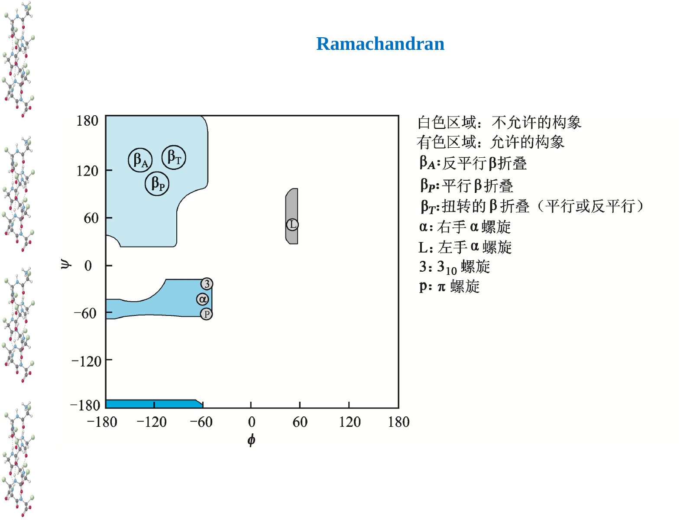

活性中心若预先接近催化所需几何，底物结合后就不必付出太多构象熵代价。肽键的平面性帮助维持这种精确排列。
CHAPTER 03 · PROTEIN STRUCTURE
蛋白质结构：从受限的肽链到可工作的三维分子
核心问题不是“四级结构背定义”，而是每一层增加了什么空间信息、靠什么稳定、如何影响功能。
肽平面
二级结构
折叠与动态性
1. 肽键让主链既受限又可塑
肽是 α-羧基与 α-氨基缩合形成的聚合物，书写方向为 N 端到 C 端。肽键本质是酰胺键；N 的孤对电子与羰基 π 系共轭，使 C–N 键具有部分双键性质。于是肽单元近似共面，ω 二面角通常接近 180°（trans）。
关于“肽平面完全没有柔性吗？”
不是。共振使转动势垒很高，故肽键在常规构象采样中近似刚性平面；但键长、键角与 ω 都会热涨落，X–Pro 的 cis 构象比例明显更高。cis/trans 转换慢，肽酰脯氨酸异构酶可催化它。真正承担多数构象自由度的是相邻的 φ（N–Cα）和 ψ（Cα–C）单键。
主动回忆
为什么“肽键近似平面”与“蛋白质可以折叠成许多构象”并不矛盾？请用 ω、φ、ψ 三个符号回答。
2. 拓展：ω 角为什么能影响催化活性？
绝大多数普通肽键的 ω 接近 180°，因此教科书常把它近似成固定值。但酶活性取决于原子能否以精确方向接触：ω 的微小偏离会连带移动羰基氧、酰胺氮和相邻侧链，改变底物取向、氢键长度和过渡态稳定。这里影响活性的通常不是“ω 自己参与反应”，而是它重排了活性中心的几何。
X–Pro 肽键的 cis 比例远高于普通肽键。两种异构体会把后续主链导向不同空间，可能切换环区构象、结合能力或催化状态。
肽键异构化的能垒较高，因而 Pro 的 cis/trans 转换可能成为折叠或功能转换的慢步骤；PPIase 通过降低能垒加速到达相应状态。
可比较 Pro→Ala 突变、改变邻近残基，或结合 NMR 动力学、晶体/冷冻电镜结构与活性测定，判断构象比例是否与催化速率同步变化。
所以更准确的结论是：ω 通常被强烈限制，却并非毫无变化；少量偏转和稀少的 cis 状态，恰好可能成为酶进行精细调控的结构杠杆。
3. Ramachandran 图：空间排斥先划掉大部分可能性

图源：第3章《蛋白质的结构》PPT，第20页。
如果 φ、ψ 可以任意取值，主链原子会彼此重叠。Ramachandran 图把空间允许区域画出来：右手 α 螺旋、β 折叠等稳定二级结构各自占据特定区域。它不是“死记角度图”，而是位阻对构象空间的第一道筛选。Gly 侧链小，允许区域更大；Pro 的环状侧链使 φ 受限。
4. 二级结构由主链氢键编排
第 n 个残基 C=O 与第 n+4 个残基 N–H 形成主链氢键。右手 α 螺旋每圈约 3.6 个残基，侧链朝外。Pro 常中断，连续同电荷或过大的侧链也会降低稳定性。
β 股接近伸展，相邻 β 股以主链氢键连接。平行与反平行的差异是链方向；反平行氢键几何通常更接近线性，但不能把“更稳定”当成唯一判断。
β 转角用四个残基让链急转，常见 Gly / Pro；环和无规则卷曲不等于随便乱动，仍有偏好的构象集合。
若疏水与亲水侧链分别集中在螺旋两侧，它可一面面向膜或疏水核心，一面接触水相。螺旋轮图正用来识别此排列。
二级结构的“规则”指主链反复的局部几何，而不是蛋白质整体固定不动。R 基团虽不直接构成 α 螺旋的 n→n+4 主链氢键，却强烈影响能否形成与是否稳定。
5. 拓展：为什么 N–H 氢键很重要，却常显得“不明显”？
肽链中的 N–H 是氢键供体，C=O 是受体。它们在 α 螺旋和 β 折叠中大量成对出现，但“存在氢键”不等于“一条氢键就贡献巨大稳定能”。未折叠肽链在水中时，N–H 和 C=O 本来就能与水形成氢键；折叠时形成链内氢键，往往同时失去与水的相互作用。因此净稳定作用取决于新旧相互作用的差额，而不是只数结构图里的虚线。
氢键的核心贡献：满足被埋藏的极性基团
疏水效应把主链推入蛋白质内部后，若某个 N–H 或 C=O 没有得到配对，它在低介电环境中会付出很高代价。规则二级结构能系统性地“结清”主链氢键，因此氢键更像决定可接受构象的几何约束，而不是孤立的万能胶。
这也解释了几个现象：Pro 进入肽链后缺少主链 N–H，常使螺旋氢键网络中断；β 折叠边缘未满足的氢键可能促进链间聚集；埋藏水分子有时会充当桥梁，补上直接氢键无法满足的几何空位。判断一个氢键是否重要，要同时看距离、方向、溶剂暴露以及替代相互作用。
6. 三级与四级结构：从局部规则到功能表面
三级结构将一条肽链的二级结构元件组织成完整的三维构象。它靠疏水效应、氢键、盐桥、范德华作用，有时靠二硫键或金属配位稳定。模体是常见的局部组合模式，如 β 发夹、β–α–β、Rossmann 折叠；结构域是常可独立折叠且通常对应功能模块的更大单位。
有两条以上肽链的蛋白质才有四级结构。它记录亚基种类、数目、空间排列和界面相互作用。四级结构可产生协同、变构调节、底物通道或新的结合界面，血红蛋白是经典异源四聚体。
构型与构象
构型改变通常需要断裂并重建共价键，例如 L/D 构型或 cis/trans 的真正异构化；构象主要来自键角和可旋转单键改变。蛋白质功能往往依赖多个构象状态之间的平衡，而不是一个雕塑般僵硬的结构。
7. 折叠不是盲试，也不是“一步到位”
Anfinsen 的核糖核酸酶复性实验说明：在合适条件下，一级序列包含折叠所需的化学信息。但这不等于每个蛋白质在细胞里都能独自、瞬间折好。Levinthal 悖论指出，若随机枚举构象，时间尺度荒谬；实际折叠沿能量景观中的偏好路径发生，局部结构、疏水塌陷和结构域形成相互协同。
Hsp70 暂时遮蔽暴露的疏水片段，伴侣蛋白如 GroEL/GroES 提供隔离腔室，降低错误聚集机会。
PDI 重排二硫键；PPI 催化脯氨酸相关肽键的 cis/trans 异构化。它们加速到达合适构象，不替序列“决定”最终结构。
内在无序区缺乏稳定疏水核心，却可在结合后折叠、携带多修饰位点或参与凝聚与组装。
朊蛋白病、阿尔茨海默病、帕金森病等提示：同一序列可能落入不同构象集合，聚集体还可模板化扩增。
8. 结构是测得的，也是预测的
X 射线晶体学、NMR 和冷冻电镜给出不同条件下的结构信息；AlphaFold 等预测模型极大扩展了可用结构，但置信度、复合物状态、柔性区域和配体依赖构象仍需要实验与问题本身共同判断。对你的化学生物学兴趣而言，结构问题最终会落到：某个残基为何能反应、一个界面为何能选择性结合、突变为何改变活性。
BLAST 用于寻找同源序列；Clustal Omega、MAFFT 等做多序列比对，Jalview 可查看保守位点和插入缺失。保守残基是提出功能假说的起点。
把保守位点映射到实验结构或高置信度预测结构，观察它位于核心、界面、配体口袋还是柔性环区，才能把序列差异转换成空间解释。
定点突变配合酶动力学、结合实验或稳定性测定，区分“结构被破坏”与“某个催化官能团被移除”。只有这一步能建立功能因果。
低置信度不一定代表模型失败，可能提示内在无序或多构象区域；高置信度静态结构也不自动给出运动、配体效应和反应过渡态。